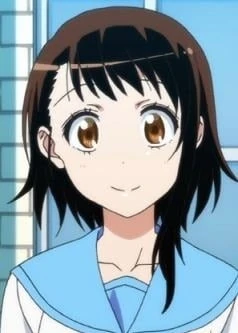

Kosaki adalah gadis remaja berkulit putih dengan rambut coklat tua sebahu yang memiliki satu helai rambut panjang yang dia sisir rapi ke sisi kiri wajahnya dan mata coklatnya. Kosaki memiliki tinggi rata-rata dan memiliki sosok kurus. Dia sangat mirip dengan ibunya.
Kosaki adalah gadis pendiam, lugu dan sedikit pemalu yang sangat baik saat dia merawat Raku Ichijō ketika dia terluka atau sakit. Umumnya, dia memilih untuk berpikir dengan hati-hati sebelum bertindak, seperti yang terlihat ketika dia menunda pengakuannya kepada Raku dengan pertimbangan bahwa dia mungkin menyukai Chitoge Kirisaki.
Terkadang, Kosaki menunjukkan tanda-tanda kurang percaya diri dan sering membutuhkan dukungan dari Ruri Miyamoto (sahabat Kosaki). Hal ini juga dibuktikan dengan fakta bahwa Haru Onodera (adik perempuan Kosaki) terlalu protektif terhadapnya (padahal Kosaki lebih tua dari Haru). Dalam konfrontasi dengan Raku, Kosaki awalnya membutuhkan dorongan dari Ruri untuk mencoba segala bentuk kontak karena dia kurang percaya diri di sekitarnya.
Seiring perkembangan seri, Kosaki mengambil langkah untuk mengatasi rasa takutnya dan malah mencoba untuk lebih terbuka dengan perasaannya, terutama dalam hal akhirnya mengakui cintanya kepada Raku. Tapi sementara Kosaki mempertahankan sebagian besar keanehan kepribadiannya, dia kurang lebih telah menjadi wanita yang kuat dan perhatian.
Kosaki Onodera
Nisekoi: False Love
Biographical Information
Japanese
小野寺 小咲Characteristics
Ulang Tahun 15 June
Umur 15 - 17
Jenis Kelamin Perempuan
Student (formerly), Worker at their Family Sweets Shop, Baker
Tinggi Badan 157 cm
Warna Rambut Hitam